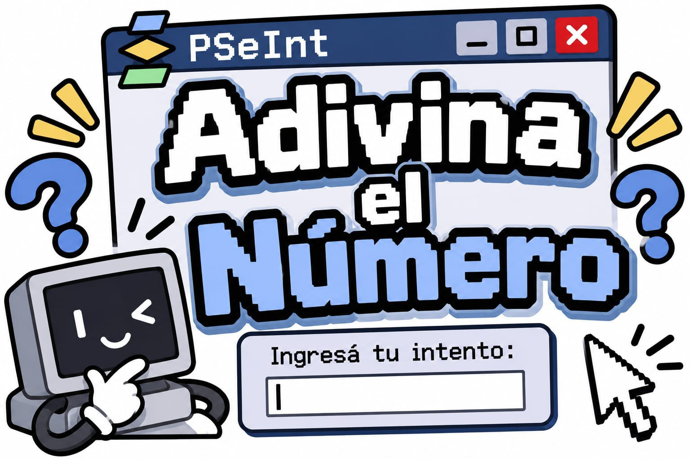

PSEINT · PROYECTO 4

Adivina el número
Versión web de mi programa de PSeInt: el programa elige un número al azar entre 1 y 50 y vos tenés que encontrarlo. Después de cada intento te dice si el número que buscás es mayor o menor, y al final te cuenta cuántos intentos usaste.
Desarrollador: Iván Mazza · 3.er año · Informática
← Volver a los 4 proyectos🔢
Adivina el número
Ingresá un número entre 1 y 50.
Sin límite de intentos.
¿Cómo se juega?
Primero, se ejecuta el programa en PSeInt. El programa elige un número secreto entre 1 y 50.
El jugador ingresa un número y el programa indica si el número secreto es mayor o menor. Se puede seguir intentando hasta adivinarlo.
Cuando se acierta, el programa muestra un mensaje de felicitación y la cantidad de intentos realizados.